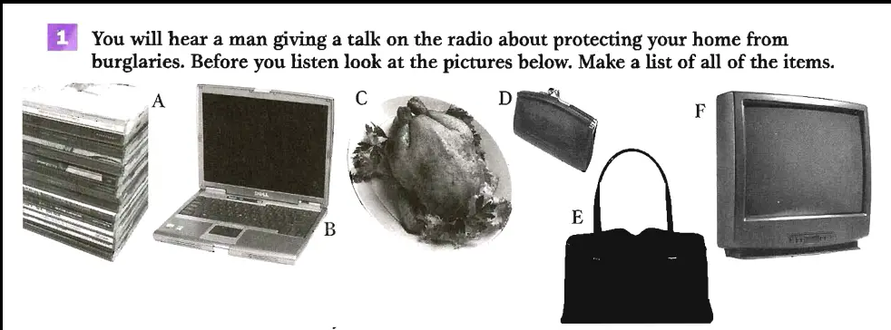
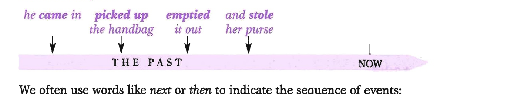
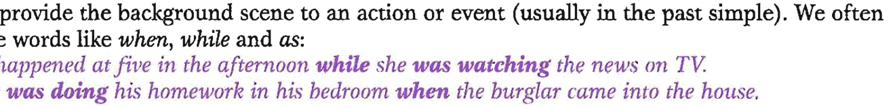
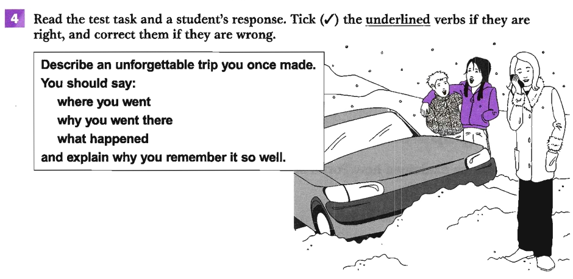

Pre-listening: Items in a home
You will hear a man giving a talk on the radio about protecting your home from burglaries. Before you listen, look at the pictures of items below. Make a list of all of the items.

Items A–F — identify each one before you listen
- A — CDs
- B — a laptop computer
- C — a roast chicken
- D — a purse
- E — a handbag
- F — a TV
Listen and answer — Track 04
Track 04 — Burglary Radio Talk
Context listening — home security
Listen and answer the following questions:
Listen again and complete these sentences — Track 04
Look at sentences 1–7 and answer these questions
B1 — Past Simple
| Form | Example |
|---|---|
| + verb + -ed (or -d) | He worked for the police. |
| − did not + verb | She didn't work for the police. |
| ? Did … + verb? | Did they work for the police? |
We use the past simple:
- To talk about single past completed actions (the time is often mentioned):
A few weeks ago a woman called to report a robbery at her house.
But no time reference is necessary if it is already known:
How did the burglar break in without anybody hearing him? - To give a series of actions in the order that they happened:
The burglar came in through the front door, picked up the woman's handbag, emptied it out and stole her purse.
Sequence of completed past actions on a timeline (THE PAST → NOW)
We often use words like next or then to indicate the sequence of events. - To talk about past repeated actions:
When her son got older he often went out to visit his friends after school.
Note that used to and would can also be used (see B3). - To talk about long-term situations in the past which are no longer true:
Bill Murphy worked for the police force for over 17 years.A long-term past situation: ← 17 YEARS → NOW
Explorers at that time believed that the world was flat.
Note that used to can also be used (see B3).
B2 — Past Continuous
| Form | Example |
|---|---|
| + was/were + verb + -ing | She was watching the news. |
| − was/were not + verb + -ing | They weren't watching the news. |
| ? Was/Were … + verb + -ing? | Were you watching the news? |
We use the past continuous:
- To provide the background scene to an action or event (usually in the past simple). Often used with when, while and as:
It happened at five in the afternoon while she was watching the news on TV.
He was doing his homework in his bedroom when the burglar came into the house.
Past continuous (background) interrupted by a past simple event
It is possible to have more than one background scene happening at the same time:
He was listening to music and working on his computer. - When we want to emphasise the activity without focusing on its completion:
For a while last year I was working at the cinema, studying for my degree and writing a column for the local newspaper. (we don't know if the actions were completed or not)
Compare: Last year I worked at the cinema, studied for my degree and wrote a column. (suggests all jobs are now complete, and probably happened in that order)
B3 — Used to and Would
| Form | Example |
|---|---|
| + used to / would + infinitive | She used to / would lock the door. |
| − did not + use to + infinitive | I didn't use to lock the door. |
| ? Did … use to + infinitive? | Did they use to lock the door? |
We use used to + infinitive or would + infinitive to talk about past repeated actions:
- She used to keep the front door locked. (but she stopped doing this)
She would leave the door unlocked whenever she was at home.
We use used to + infinitive to talk about permanent situations that are usually no longer true:
- Bill Murphy used to work for the police force. (but he doesn't now)
not: Bill Murphy would work for the police force.
Bill Murphy worked for the police force for over 17 years.
not: Bill Murphy used to work for the police force for over 17 years.
Fill in the gaps with past simple verbs from the box
Fill in gaps — past simple or past continuous. Where could you use used to?
Use would or used to where possible — Japanese customs dialogue
Teacher: What sort of things 1 (you/do) as a child?
Yoko: There were many customs that we 2 (follow). We 3 (move) house when I was seven and we 4 (visit) new neighbours with gifts. People 5 (give) gifts of Japanese noodles.
Teacher: 6 (have) one tradition you particularly remember?
Yoko: Yes — in spring when the cherry blossoms were out. As a family we 7 (go) into the countryside and we 8 (spend) the day eating, drinking and singing. One year my father 9 (take) a lovely photo of me and my sisters.
Teacher: And 10 (you/have to) do anything you didn't like?
Yoko: Yes. We 11 (have to) clean the house thoroughly. My sisters and I 12 (not/look forward to) it very much!
Tick (✓) correct underlined verbs, correct the wrong ones
Speaking task: "Describe an unforgettable trip you once made."

Speaking task context — family car stuck in snow during a winter trip
Jumping Spiders
Questions 1–9 — Which paragraph (A–F) contains the following information?
Questions 10–13 — Choose the correct letter A, B, C or D
Match each sentence to its grammatical explanation
Sentences from the text:
- The researchers allowed various prey spiders to spin webs in the laboratory and then introduced Portia spiders.
- Portia spiders moved more when the webs were shaking than when they were still.
- They noticed that the spiders would sometimes shake their quarry's web violently.
Explanations: